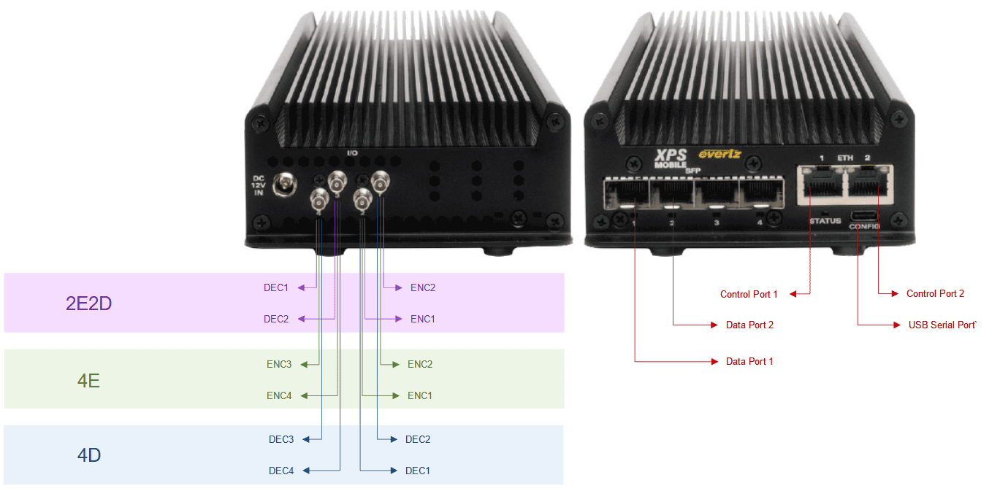
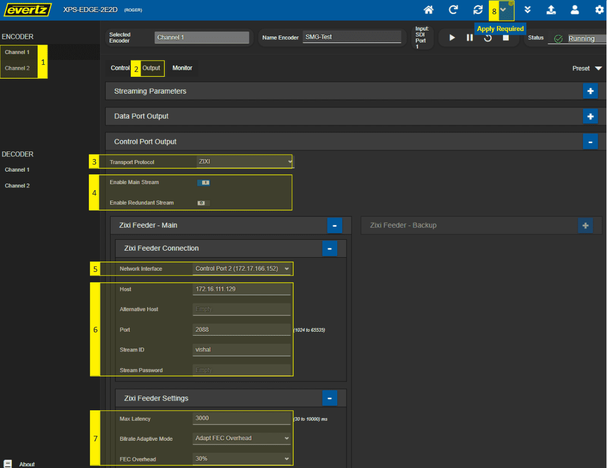
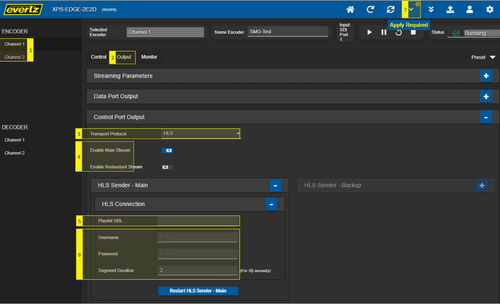
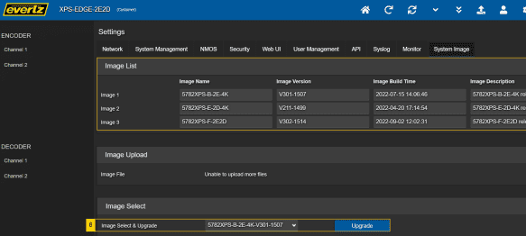

XPS EDGE User Guide
This user’s guide explains how to configure and manage XPS EDGE to stream real-time high quality and low
latency video, audio, and metadata over any IP network.
OVERVIEW
XPS is Evertz's streaming platform that provides braodcast-quality video encoding at ultra-low latencies for
mission-critical applications, supporting up to 4x simultaneous 1080p50/60 HD video encodes or decodes. It
can be configured in software to switch between either a four-channel encoder, four-channel-decoder or a
combination of two encoders and two decoders. Aditionally, the XPS Series supports up to 2x 2160p50/60 4K
UHD video resolutions (requires 4K APP to be installed) with 16x channels of audio, with support for
different compression standards such as HEVC or H.264 over any IP network.
Features & Benefits
- Real-time ultra-low latency with highest video quality for 24/7 up-time applications.
- High density with quad-channel encode or decode, standalone or rack mount chasis options.
- Native support of protocols such as SRT, ZIXI, RIST, HLS, RTMP/RTMPS for streamng over lossy networks
like the Internet.
- High availability with dual power supply options.
- Multiple form-factors to suit all applications.
Applications
- 4K remote contribution
- Monitoring return feeds
- Remote operation
- Remote monitoring
- Esports
- Live interviews
- Mission command and control
- IPTV distribution
XPS–EDGE-HW - standalone module
5782XPS-HW Blade Shown in 570 Frame
SPECIFICATIONS
| Channels: |
4x 3G SDI or 2x 4K/UHD |
VIDEO INPUTS/OUTPUTS
|
| Standards: |
SD, HD, 3G, 12G (-SDI) |
| Interfaces: |
SD, HD, 3G, 12G (-SDI) |
| Streaming: |
2x RJ-45 1GbE |
| Protocols: |
MPEG transport SRT, ZIXI, RIST, HLS, RTMP/RTMPS |
| Codecs: |
H.265/HEVC, H.264 (progressive only) |
| Chroma Subsampling: |
4:2:0/4:2:2 |
| Bit Depth: |
8-bit, 10-bit |
AUDIO
|
| Audio: |
PCM: |
Up to 16 channels per input |
|
AAC: |
Up to 12 channels per input |
|
Embedded AAC3: |
Up to 8 channels per input |
|
| Embedded: |
| SD: |
SMPTE ST 272M |
| HD: |
SMPTE ST 299M |
| Compression: |
AAC LC |
|
AC3 Passthrough |
VANC
|
| VANC: |
SMPTE ST 2038 support |
CONTROL
|
| Control: |
| Interface: |
Ethernet or serial |
| Codecs: |
HTTP, SNMP, API, VistaLINK PRO, MAGNUM, and VUE |
GETTING STARTED
XPS-EDGE
CONNECTIONS AND SDI PORTS
The XPS EDGE can be ordered with various package options to Encode and/or Decode using the SDI
Ports.
Data Ports 1-2: Dedicated for UDP IN/OUT
Control Ports: For system configuation and transferring SRT, ZIXI, RIST, HLS, RTMP/RTMPS streams.
Configurable as UDP IN/OUT.
SDI Ports: SDI ports are used to connect I/O devices to be Encoded/Decoded depending on the APP
loaded into the unit.
- Dual Encoder/Decoder (2E2D)
- 4 Encoders (4E)
- 4 Decoders (4D)
- Encoder/Decoder (1E1D)
- 2 Encoders (2E)
- 2 Decoders (2D)
- 1 Encoder UDX
- 1 Decoder UDX
SDI Mapping for XPS EDGE 3G APPs

SDI Mapping for XPS EDGE 4K APPs
SDI Mapping for XPS EDGE UDX APPs
5782XPS-HW
CONNECTIONS AND IP AND SDI PORTS IN 5782XPS-HW
The 5782XPS-HW can be ordered with various package options to Encode and/or decode using the SDI
Ports.
Data Ports 1-2: Dedicated for UDP IN/OUT
Control Ports: For system configuation and transferring SRT, ZIXI, RIST, HLS, RTMP/RTMPS streams.
Configurable as UDP IN/OUT.
SDI Ports: SDI ports are used to connect I/O devices to be Encoded/Decoded depending on the APP
loaded into the unit.
- Dual Encoder/Decoder (2E2D)
- 4 Encoders (4E)
- 4 Decoders (4D)
- Encoder/Decoder (1E1D)
- 2 Encoders (2E)
- 2 Decoders (2D)
- 2 Encoders 3G UDX
- 2 Decoders 3G UDX
- 1 Encoder 4K UDX
- 1 Decoder 4K UDX
- 2 Encoders ST2110
- 2 Decoders ST2110
SDI Mapping for 5782XPS-HW 3G apps
SDI Mapping for 5782XPS-HW 4K APPs

SDI Mapping for 5782XPS-HW 3G UDX apps
SDI Mapping for 5782XPS-HW 4K UDX apps
SDI Mapping for 5782XPS-HW ST2110 apps
CONTROL PORT IP CONFIGURATION
The XPS unit should be labeled with default control IPs. Use control port 2 for mangement. The card IP can be
configured either through the USB port or through ADV UI.
- Remove the card from the box.
- Record the IP on the label.
- Connect Control port 1 of the card to the Workstation.
- Connect Control port 2 of the card to the network or router.
- Use Option 1 to configure the card IP, use Option 2 if Option 1
fails.
- Option 1 pre-requisites: Workstation with RJ45 Ethernet network interface or external Ethernet adapter.
Option 1: Configure IP Through Web GUI
- Click on the Settings button.
- Click on the Network tab.
-
Configure IP settings for control port 2:
- Enter desired IP settings.
- Alternatively, if DHCP server has been set on your network, you may enable DHCP for automatic
port selection.
- Click the Apply button to finialize your changes.
Option 2: Configure IP Through USB Serial Port
- Connect a USB Type-C into the port in the card's front edge, connect the other end to your workstation.
Workstation without a USB port will require an external USB adapter.
- Open a terminal software (like Tera Term) and configure the serial port settings as below.
Note: the COM port might be different.
-
Mac users might not have access to TeraTerm. Please follow these steps:
- Once the serial cable is connected to a Mac workstation, open up a terminal.
- Type in the command: ls /dev/tty.*
- XPS should be listed as tty.usbserial-XXXXXX
- Type in the next command to connect to the serial port: screen
/dev/tty.usbserial-XXXXXX 115200
-
Make sure you are connected to the right COM/tty.
- The terminal will display "Welcome to XPS-EDGE-M Platform". Network configurations are
only accessible for "-M Platform" serial port.
- Login to serial term with username/password: customer/customer
- Navigate to Network setup and configure Control port 2.
- Press X to save your changes and exit.
DNS CONFIGURATION
The DNS configuration can be modified through the Systems Network tab as displayed in the image below.
- Click on the Network tab in the Settings menu.
- Set the IP address for the control port DNS server (Primary DNS) you are using.
- Set the IP address for the Secondary DNS
- Click the Apply button to finialize your changes.
SYSTEM TIME AND NTP SERVER CONFIGURATION
The time and NTP server configuration can be modified through the Systems Network tab as displayed in the
image below.
- Click on the Network tab in the Settings menu.
- Set value for Time Zone Offset.
- Enter NTP Server addresses to be added.
- Set Gateway IP addresses to be used for NTP traffic.
- Click the Apply button to finialize your changes.
CONFIGURE SYSTEM CONTROLS
CONFIGURE ENCODER APPLICATION MODE
In the System Management page, the user can set the Encoder Application Mode to have the most optimized
performance based on the use case needed.
- Click on the System Management tab in the Settings menu.
-
Choose an Application Mode:
- Streaming: Optimized for best Video Quality
- Broadcasting: Optimized for fixed latency
- Click the Apply button to finialize your changes.
ENABLE/DISABLE UDP MULICAST SUPPORT
You can enable or disable multicast UDP traffic through control ports of XPS. It is recommended to Disable
this option if you are not sure if the control network can handle traffic.
- Click on the System Management tab in the Settings menu.
- Enable/Disable the option for Control Port UDP Multicast Support.
- Click the Apply button to finialize your changes.
HOME PAGE
- Access the home page by selecting Product Name.
- Modify configurations for Encoder Channels through dedicated options under ENCODER.
- Modify configurations for Decoder Channels through dedicated options under DECODER.
- Monitor CPU utilization by clicking on the CPU Utilization icon.
- Shortcut to homepage by clicking Home icon.
- Refresh the page by clicking the Refresh icon.
- Enable/Disable Auto-Refresh icon to automatically refresh the webpage.
- Apply changes by clicking on the Apply button after each modification.
- Dynamic Apply button to instantly apply changes.
- Perform firmware upgrades by selecting the Firmware Upgrade button.
- User Login/Logout icon.
- Modify device settings by clicking the Settings icon.
HOME PAGE QUICK EDIT
- Switch to edit mode by clicking the Edit icon.
- Eye button to switch back to view mode.
-
Change the device configurations.
- Change the Encoder Name.
- Change the Codec.
- Change the IP Address/Port Number.
- Cancel icon to cancel any changes made.
- Save changes by clicking on the "Apply" button.
ENCODER CONFIGURATION
CONFIGURE ENCODER CONTROL
- Choose which Encoder Channel to configure.
- Click on the Control tab.
-
Configure Video Encoder.
- Choose Video Codec.
-
Enable/Disable Deinterlacer.
- Deinterlacer will always be ON for H264 encode if the SDI Input is HD Interlaced.
- Deinterlacer is configurable for HEVC encode of the SDI Input is HD Interlaced.
-
Toggle Intra Refresh On/Off.
- Off: Manually control GOP Structure & GOP Size.
- On: Optimized for minimum latency; P frames only, no manual selection for GOP Structure
& GOP Size.
- Configure Audio.
- Configure VANC.
- Assign PID numbers, Program Number and TS ID.
- Click the Apply button to finialize your changes.
Note: Please make sure the
right Encoder Mode is selected.
CONFIGURE ENCODER OUTPUT
- Choose the Encoder Channel.
- Click on the Output tab.
-
Configure Output Streaming Parameters.
-
Choose Output Shaping.
- CBR: Constant Bitrate
- CVBR: Capped Variable Bitrate
- VBR: Variable Bitrate
- Enter Bandwidth Overhead.
- Choose the TS Encapsulation Type.
- Enter the TTL.
- Enable/Disable UDP Output through SFP1 and/or SFP2, enter multicast IP address and UDP Port Number.
- Click the Apply button to finialize your changes.
RTMP Output Protocol
- Choose the Encoder Channel.
- Click on the Output tab.
- Select RTMP as the Output Protocol in the Control Output Protocol drop-down menu.
- Enable Main or/and Redundant Stream.
- Set RTMP URL.
- Set Stream Name, username, passphrase, and flash version.
- Click the Apply button to finialize your changes.
Note: RTMP will not work with
interlaced input and/or HEVC codec. Enabling RTMP will automatically switch codec to H264 and audio to
AAC2.0.
SRT Output Protocol
- Choose the Encoder Channel.
- Click on the Output tab.
- Select SRT as the Output Protocol in the Control Output Protocol drop-down menu.
- Enable Main or/and Redundant Stream.
- Choose the Network Interface for SRT - Control port 1 OR Control port 2.
-
Choose SRT Connection Mode - Caller, Listener, and Rendezvous.
- For Caller mode, enter Address, Destination Port, and toggle Source Port Mode (if enabled, enter
Source Port number).
- For Listener mode, enter Port number.
- For Rendezvous mode, enter Address, Port number, and Source Port number.
- Enter Output TTL, SRT Latency, and enable/disable Encryption.
- Click the Apply button to finialize your changes.
Note: The minimum recommended
latency can be monitored in the SRT Main Section in the image below.
RIST Output Protocol
- Choose the Encoder Channel.
- Click on the Output tab.
- Select RIST as the Output Protocol in the Control Output Protocol drop-down menu.
- Enable Main or/and Redundant Stream.
- Choose the Network Interace for RIST - Control port 1 OR Control port 2.
- Choose RIST Transmitter Connection Profile - Simple or Main.
-
Configure RIST Connection Parameters:
- For Simple Profile, Destination Port number, Stream ID, Latency, Session Timeout, enable/disable
DTLS, DTLS Peer Verify, pre-Shared Key Type, and Null Packet Deletion.
-
For Main Profile:
- Choose RIST Connection Mode - Server or Client.
- For Server mode, enter Destination Port number, Stream ID, Latency, Session Timeout,
enable/disable DTLS, DTLS Peer Verify, pre-Shared Key Type, and Null Packet Deletion.
- For Client mode, enter Destination IP, Destination Port number, Stream ID, Latency,
Session Timeout, enable/disable DTLS, DTLS Peer Verify, pre-Shared Key Type, and Null
Packet Deletion.
- Click the Apply button to finialize your changes.
RIST Encoding Status can be monitored in the Monitor page on the Streaming Output Monitor sections as seen
below.
ZIXI Output Protocol

- Choose the Encoder Channel.
- Click on the Output tab.
- Select ZIXI as the Output Protocol in the Control Output Protocol drop-down menu.
- Enable Main or/and Redundant Stream.
- Choose the Network Interface for ZIXI - Control port 1, Control port 2, or alternatively, the user can
enable Bond Network Interfaces.
- Enter ZIXI Connection details. Enter Broadcast host details (Host, Alternate Host, Port Number, and
Stream Credentials).
- Enter ZIXI Feeder Settings. Select Max Latency, Bitrate Adaptive Mode, FEC Overhead, DTLS Certificate
Error Ignore, and Encryption Type.
- Click the Apply button to finialize your changes.
ZIXI Streaming Status can be monitored in the Monitor page on the Streaming Output Monitor sections as seen
below.
HLS Output Protocol

- Choose the Encoder Channel.
- Click on the Output tab.
- Select HLS as the Output Protocol in the Control Output Protocol drop-down menu.
- Enable Main or/and Redundant Stream.
- Enter HLS Stream Playlist URL address.
- Enter Username, Password, and Segment Duration.
- Click the Apply button to finialize your changes.
DECODER CONFIGURATION
CONFIGURE DECODER CONTROL
- Choose which Decoder Channel to configure.
- Click on the Control tab.
- Choose the Latency Mode (Standard or Ultra-Low Latency).
- Choose Auto PID Select as Program Tuning Method.
- Click the Apply button to finialize your changes.
CONFIGURE DECODER INPUT
SRT Input Protocol
- Choose which Decoder Channel to configure.
- Click on the Input tab.
- Choose SRT as the Input Protocol.
- Choose a Failover Mode. If Manual is chosen, select Main, Backup or Manual.
- Choose Input Interface - Control port 1 or Control port 2.
-
Choose SRT Connection Mode - Caller, Listener, and Rendezvous.
- For Caller mode, enter Address and Port number, and toggle Source Port Mode (if enabled, enter
Source Port number).
- For Listener mode, enter Port number.
- For Rendezvous mode, enter Address, Destination Port number, and Source Port number.
- Enable/Disable Encryption and Enter SRT Latency.
- Click the Apply button to finialize your changes.
RIST Input Protocol
- Choose which Decoder Channel to configure.
- Click on the Input tab.
- Choose RIST as the Input Protocol.
- Choose a Failover Mode. If Manual is chosen, select Main, Backup or Manual.
- Choose Input Interface - Control port 1 or Control port 2.
- Choose RIST Receiver Connection Profile - Simple or Main.
-
Configure RIST Connection Parameters:
- For Simple Profile, Destination Port number, Stream ID, Latency, Session Timeout, enable/disable
DTLS, DTLS Peer Verify, pre-Shared Key Type, and Null Packet Deletion.
-
For Main Profile:
- Choose RIST Connection Mode - Server or Client.
- For Server mode, enter Destination Port number, Stream ID, Latency, Session Timeout,
enable/disable DTLS, DTLS Peer Verify, pre-Shared Key Type, and Null Packet Deletion.
- For Client mode, enter Destination IP, Destination Port number, Stream ID, Latency,
Session Timeout, enable/disable DTLS, DTLS Peer Verify, pre-Shared Key Type, and Null
Packet Deletion.
- Click the Apply button to finialize your changes.
ZIXI Input Protocol
- Choose which Decoder Channel to configure.
- Click on the Input tab.
- Choose ZIXI as the Input Protocol.
- Choose a Failover Mode. If Manual is chosen, select Main, Backup or Manual.
- Choose Input Interface - Control port 1 or Control port 2.
- Enter ZIXI Connection details. Enter Broadcast host details (Host, Alternate Host, Port Number, and
Stream Credentials).
- Enter ZIXI Feeder Settings. Select Max Latency, Bitrate Adaptive Mode, FEC Overhead, DTLS Certificate
Error Ignore, and Encryption Type.
- Click the Apply button to finialize your changes.
PRESETS
Presets function in Encoder and Decoder Channels to allow a user to Save, Load, Import and Export Channel
configurations. Presets can be used for backups and to quickly switch configurations of a channel. To see
available Preset options, click the Preset drop-down menu.
- Click the Load button to load a saved/imported preset to the channel.
- Click the Save button to save a channel preset.
- Click the Delete button to delete a saved channel preset.
- Click the Import button to import a channel preset from your workstation to XPS.
- Click the Export button to export a channel preset from XPS to your workstation.
IMPORT & EXPORT SYSTEM CONFIGURATION FILES
Users can Import & Export configuration files to save a copy of the current XPS configuration to be used
for backup or to copy the configuration to different units. Through Advanced UI, users can use the Import
& Export Configure File found on the Systems Management tab in the Settings menu as shown below.
Export a configuration file:
- Click on the System Management tab in the Settings menu.
- Click on the Download button and choose the desired folder location to save the JSON file.
Import a configuration file:
- Click on the System Management tab in the Settings menu.
- Click on the Choose File button and navigate to the folder where the configuration file has been saved,
click Open to select the saved JSON file.
- Click on the Upload button to sync with the saved Configuration File.
- Click the Apply button to finialize your changes.
FIRMWARE UPGRADE
Using the Advanced UI® on a web browser is the fastest and recommended procedure to laod the firmware
onto the XPS Series products.
FIRMWARE UPGRADE USING ADV UI®
On the top of the web page for the XPS-EDGE-HW interface, there is an Upgrade button. The Upgrade tab is used
to check the current firmware version and upload the latest firmware.
Note: Contact Evertz to get
the latest firmware file.
Selecting the Upgrade tab will open a new window, as shown below, where the current firmware version is
shown. Should the firmware version be outdated, the user will need to downlaod the firmware image file.
Click Choose File and browse to locate the image file.
Once selected:
- Navigate to the right folder and click Open to select the new firmware file.
- Click Upgrade and watch the progress bar for the status. Once compelted, the device will automatically
restart.
Note: An alternate method to
upgrade firmware is mentioned in the next section.
STEPS TO SAVE MULTIPLE FIRMWARES
- Click on the Settings menu.
- Click on the System Image tab.
- Click on Choose File and click Open.
- Click on the Upload button and select Yes on the Confirmation pop-up.
- Repeat the same steps to add multiple firmware.
- Choose the firmware you want and click on Upgrade as shown below.
